A Boraline é um espaço para registrar experiências vividas através da corrida: provas, trilhas, viagens, paisagens e histórias que merecem permanecer.
Não é sobre velocidade. É sobre presença, caminho e coração.
Em breve, cada corrida terá seu próprio capítulo: local, data, distância, fotos e o relato do que ficou pelo caminho.